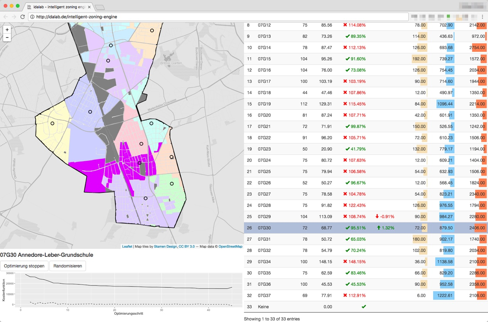

{% extends "_case-studies.html" %}
{% set case_id = 13 %}
{% block challenge %}
Die Berliner Verwaltung weist Schulplätze anhand von festgelegten Kriterien und auf der Grundlage von
Einschulungsbereichen zu. Dabei gibt es zwei wesentliche Probleme: Erstens ist der Prozess vergleichsweise
intransparent und wenig effizient. Zweitens ist der Zuschnitt jeder Einschulungsbereiche längere Zeit nicht mehr
überprüft und den sich ständig verändernden Bedingungen angepasst worden. Die letzte von der Verwaltung
vorgeschlagene Neuzuschneidung der Einzugsgebiete ist an politischer Akzeptanz gescheitert. Die Zuschneidung der
Einschulungsbereiche ist aber das wesentliche Mittel zur Justierung der wichtigen Kriterien altersangemessener
Schulweg und Schulwegsicherheit. Gegen die Zuweisung ihres Kindes an eine nicht gewünschte Schule reichen Eltern
außerdem immer wieder Klage ein und verweisen dabei auch auf (angeblich) nicht eingehaltene Kriterien oder auf die
Tatsache der Nichtanpassung der Bereiche. Das belastet die Verwaltung zusätzlich und erschwert den Planungsprozess,
sowohl von Jahr zu Jahr als auch langfristig.
{% endblock %}
{% block solution %}
Das im Rahmen eines Pilotprojekts entstandene Tool “Einschulungsbereicherechner” unterstützt die Verwaltung bei der
Zuschneidung von Einschulungsbereichen für Grundschulen. Entwickelt wurde es von einem Projektkonsortium, dem das
Bezirksamt Tempelhof-Schnöneberg, die Senatsverwaltung für Wirtschaft, die Technologiestiftung Berlin, die Stiftung
Neue Verantwortung und die idalab GmbH angehören.
 Das Tool bietet im Wesentlichen zwei Funktionen: 1. Eine optimierte automatische Zuordnung von Häuserblöcken zu
Grundschulen unter Berücksichtigung vorgegebener Parameter und Beschränkungen. 2. Analyse eines bestehenden
Zuordnungsschemas hinsichtlich der Auslastung einzelner Schulen und unter Berücksichtigung eines altersangemessenen
und sicheren Schulwegs. Das Tool unterstützt so einen objektiven und transparenten Planungsprozess, der eine
gleichmäßige Auslastung der bestehenden Grundschulen bewirkt idealer Weise auch und zu einer Reduzierung von
Elternwechselwünschen führt. Darüber hinaus kann es auch zur Planung neuer Schulstandorte und zur Prüfung
alternativer Szenarien eingesetzt werden.
Das Tool bietet im Wesentlichen zwei Funktionen: 1. Eine optimierte automatische Zuordnung von Häuserblöcken zu
Grundschulen unter Berücksichtigung vorgegebener Parameter und Beschränkungen. 2. Analyse eines bestehenden
Zuordnungsschemas hinsichtlich der Auslastung einzelner Schulen und unter Berücksichtigung eines altersangemessenen
und sicheren Schulwegs. Das Tool unterstützt so einen objektiven und transparenten Planungsprozess, der eine
gleichmäßige Auslastung der bestehenden Grundschulen bewirkt idealer Weise auch und zu einer Reduzierung von
Elternwechselwünschen führt. Darüber hinaus kann es auch zur Planung neuer Schulstandorte und zur Prüfung
alternativer Szenarien eingesetzt werden.
Aktuell befindet sich das Tool in der Beta-Version und soll zunächst im Berliner Bezirk Tempelhof-Schöneberg
eingesetzt werden, der in mancher Hinsicht den Berliner Durchschnitt abbildet. Ein Einsatz in anderen Bezirken und
Bundesländern ist mit den durch die Bildungshoheit der Länder verbundenen Einschränkungen grundsätzlich ebenfalls
denkbar.
{% endblock %}
{% block datasets %}
Das Tool basiert größtenteils auf offenen, in Berlin frei verfügbaren Daten und wird durch einige spezifische,
ebenfalls anonyme Verwaltungsdatensätze angereichert. Folgende frei verfügbare Daten sind bei der Erstellung des
Prototyps zum Einsatz gekommen:
Folgende spezifische, (noch) nicht frei verfügbare Datensätze sind verwendet worden:
- Einwohnerzahlen auf Block-Ebene
- sozioökonomische Daten auf Block-Ebene
Ziel ist es, diese bislang nicht frei verfügbaren Daten im Projektverlauf ebenfalls zu veröffentlichen, sofern dies vom Datenschutz her unbedenklich ist. Zu den diesbezüglich möglicherweise gegebenen Implikationen, insbesondere auch was die Verschneidung der genannten Datensätze angeht, ist die Berliner Landesdatenschutzbeauftragte frühzeitig einbezogen worden.
{% endblock %}
{% block benefitters %}
 Von dem neuen Instrument zur Berechnung der Einschulungsbereiche profitieren zahlreiche Akteure, allen voran die Berliner Schüler, für die ein altersangemessener Schulweg und Schulwegsicherheit gewährleistet wird.
Die Berliner Verwaltung kann darüber hinaus eine besser Auslastung von Schulen erzielen und mithilfe des Programms neue Schulstandorte besser planen. Dabei nimmt das kartenbasierte Planungstool die automatische und optimale Zuschneidung von Einschulungsbereichen immer unter Berücksichtigung vorgegebener Restriktionen und Präferenzen vor. Für die Eltern entsteht so ein transparenter Prozess, der ihrem Bedürfnis nach dem Besten für ihr Kind, Rechnung trägt.
Auch die Grundschulen profitieren von dem Einschulungsbereicherechner und dem objektiven, transparenten Planungsprozess. Denn dieser wird zu einer gleichmäßigeren Auslastung der Grundschulen führen, die zudem frühzeitiger bestimmbar ist. Zusätzlich kann mit dem Planungstool die soziale Zusammensetzung an den Schulen gesteuert und sozialer Segregation vorgebeugt werden.
{% endblock %}
{% block outcome %}
Von dem neuen Instrument zur Berechnung der Einschulungsbereiche profitieren zahlreiche Akteure, allen voran die Berliner Schüler, für die ein altersangemessener Schulweg und Schulwegsicherheit gewährleistet wird.
Die Berliner Verwaltung kann darüber hinaus eine besser Auslastung von Schulen erzielen und mithilfe des Programms neue Schulstandorte besser planen. Dabei nimmt das kartenbasierte Planungstool die automatische und optimale Zuschneidung von Einschulungsbereichen immer unter Berücksichtigung vorgegebener Restriktionen und Präferenzen vor. Für die Eltern entsteht so ein transparenter Prozess, der ihrem Bedürfnis nach dem Besten für ihr Kind, Rechnung trägt.
Auch die Grundschulen profitieren von dem Einschulungsbereicherechner und dem objektiven, transparenten Planungsprozess. Denn dieser wird zu einer gleichmäßigeren Auslastung der Grundschulen führen, die zudem frühzeitiger bestimmbar ist. Zusätzlich kann mit dem Planungstool die soziale Zusammensetzung an den Schulen gesteuert und sozialer Segregation vorgebeugt werden.
{% endblock %}
{% block outcome %}
Robert leitet eine Grundschule in Berlin-Schöneberg und die Zuordnung der Grundschulplätze für die neuen
Erstklässler bereitet ihm jedes Jahr Kopfschmerzen. Auf welcher Grundlage erfolgen die Zuordnungen? Wo verlaufen die
Grenzen der Einschulungsbereiche? Die Zahl der wechselwilligen Eltern steigt, so dass of noch kurz vor den
Sommerferien die Klassenzusammensetzungen nicht klar sind. Auch die soziale Zusammensetzung der Klassen beobachtet
Robert mit immer mehr Sorge, denn Moden der bei Eltern besonders beliebten Schulen sorgen für Konzentrationen. Und
die Leidtragenden all dessen sind am Ende im Grunde immer die Kinder.

Dann hört Robert von einem neuen Planungstool für die Zuschneidung der Einschulungsbereiche im Bezirk
Tempelhof-Schöneberg, das aktuell in der Entwicklung ist. Zunächst befürchtet er, dass sich damit nur ein neues
Instrument für die Verwaltung, aber noch kein besseres Ergebnis für die Grundschulen gefunden wurde. Als er genauer
nachhört, stellt sich heraus, dass mit Hilfe von offenen Daten automatisch eine optimale Zuschneidung von
Einschulungsbereichen gemäß vorzugebenden Restriktionen und Präferenzen möglich sein soll. Immer noch ist Robert
skeptisch. Wird diese Anwendung wirklich den Schulen, Schülern und Eltern helfen? Aber als er erfährt, dass mit dem
Planungstool die Zuordnung der Einschulungsbereiche zum ersten Mal transparent nachvollzogen warden kann, regt sich
sein Interesse und er fragt beim Bezirksamt nach. Hier darf er schon einmal vorab die Beta-Version ausprobieren und
mit mehreren Parametereinstellungen experimentieren.
 Auf einer Karte kann er die Zuschneidung der Einschulungsbereiche optisch nachvollziehen. Die aus den Vorgaben
resultierenden Daten werden auf der Ebene der einzelnen Schulen exportfähig generiert. Zusätzlich können bei
laufender Zuschnittsoptimierung einzelne Wohnblöcke aufgrund entsprechender Planungsnotwendigkeiten händisch
bestimmten Schulen fest zugeordnet werden. Diese Zuordnungen werden im weiteren Optimierungsprozess als zusätzliche
Restriktionen berücksichtigt. So kann beispielsweise durch die Begrenzung des Anteils von Kindern aus
lehrmittelzuzahlungsbefreiten Haushalten sozialer Segregation entgegengewirkt werden.
Auf einer Karte kann er die Zuschneidung der Einschulungsbereiche optisch nachvollziehen. Die aus den Vorgaben
resultierenden Daten werden auf der Ebene der einzelnen Schulen exportfähig generiert. Zusätzlich können bei
laufender Zuschnittsoptimierung einzelne Wohnblöcke aufgrund entsprechender Planungsnotwendigkeiten händisch
bestimmten Schulen fest zugeordnet werden. Diese Zuordnungen werden im weiteren Optimierungsprozess als zusätzliche
Restriktionen berücksichtigt. So kann beispielsweise durch die Begrenzung des Anteils von Kindern aus
lehrmittelzuzahlungsbefreiten Haushalten sozialer Segregation entgegengewirkt werden.
Für Roberts Planung bedeutete die Einführung des neuen Planungstools, dass er mit einer höheren Planungssicherheit
rechnen könnte, was die Auslastung und soziale Zusammensetzung seiner Schule angeht.
Daher hofft er, dass die Entwicklung bald abgeschlossen werden kann, damit zum neuen Schuljahr im Bezirk
Tempelhof-Schöneberg Schulplätze effizienter, transparenter und besser vergeben werden können. Und sobald die Praxis
erstmal gezeigt haben wird, welche Vorteile das Tool für alle Beteiligten eröffnet, dann werden sicherlich auch
andere Berliner Bezirke es für ihren Schulplatzvergabeprozess einsetzen, da ist sich Robert sicher.
{% endblock %}
{% block sources %}
Projektbeschreibung bei Government 2020, dem Blog des Behördenspiegel:
http://www.government2020.de/blog/?p=1768
Projektbeschreibung bei codefor.de:
http://codefor.de/blog/open-data-verwaltung-grundschuleinzugsgebiete
{% endblock %}